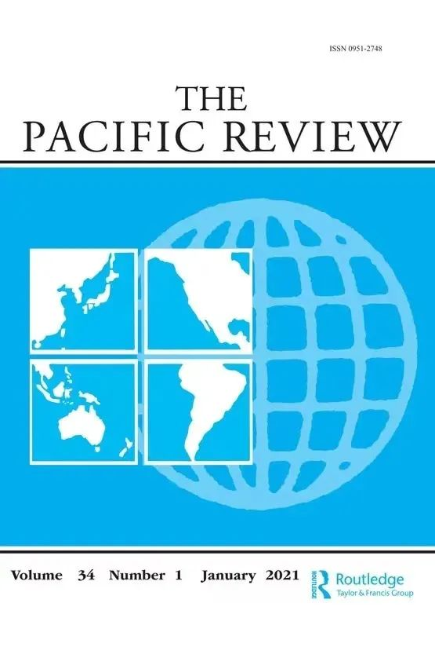
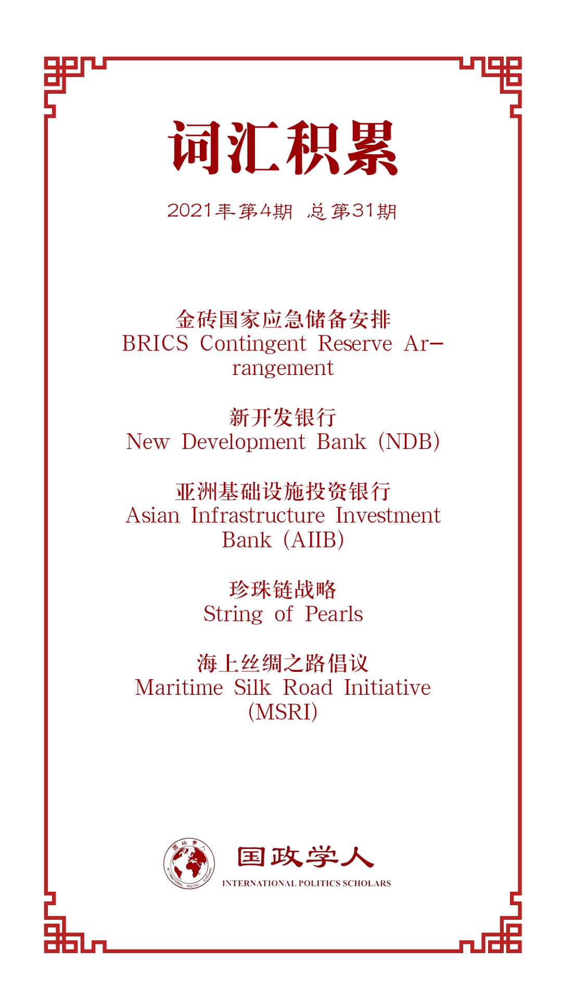

收录于合集

作品简介
【作者】 Bas Hooijmaaijers是华东师范大学国际关系与地区发展研究院助理教授和晨晖学者，同时也是比利时天主教鲁汶大学LINES研究所研究学者。
【编译】 王芷汀（国政学人编译员，约翰斯霍普金斯大学保罗尼采高级国际关系研究院）
【校对】 徐一凡
【审核】 黄慧彬
【排版】 秦子宁
【美编 】方引弓
【来源】 Bas Hooijmaaijers (2021) China, the BRICS, and the limitations of reshaping global economic governance, The Pacific Review, 34:1, 29-55.
【归档】 《国际关系前沿》2021年第4期，总第31期。
期刊简介

The Pacific Review《太平洋评论》是太平洋地区研究的主要平台，作为跨学科期刊，其宗旨和目标为打破研究领域之间以及学术界、新闻界、政府和商界之间的壁垒，重点关注政策问题。根据Journal Citation Reports显示，2019年该刊的影响因子为1.633，在区域研究类SSCI期刊中排名11/77，在国际关系类SSCI期刊中排名第35/95。
**** 中国，金砖国家，及其重塑全球经济治理的局限性
China, the BRICS, and the limitations of reshaping global economic governance
Bas Hooijmaaijers
内容提要
2006年，金砖国家（巴西、俄罗斯、印度和中国）举行首次会晤，开启金砖国家（巴西、俄罗斯、印度、中国和南非）合作序幕。我们目睹了包括新开发银行（New Development Bank, NDB）和金砖国家应急储备安排框架（BRICS Contingent Reserve Arrangement）等金砖国家机构的建立。基于金砖国家政治经济实力，中国对其重视程度超过其他的伙伴。此外，中国政府还提出了一系列倡议，包括“一带一路”倡议（Belt and Road Initiative, BRI）和亚洲基础设施投资银行（Asian Infrastructure Investment Bank, AIIB）。其中，“一带一路”倡议使中国与包括印度在内的其他金砖国家成员产生了摩擦。本文探讨了中国和金砖国家如何和为何重塑全球经济治理，以及金砖国家和金砖国家机构在多大程度上代表了全球经济治理的新趋势。更重要的是，本文分析了中国如何通过金砖国家组织重塑全球经济治理，以及中国独立提出的倡议对金砖国家重塑全球经济治理的影响。本文指出金砖国家间的互动方式限制了其重塑全球经济治理的潜力。至关重要的是，中国、印度和其他金砖国家在现行国际体系下对各自国内政治经济和国家利益上均拥有不同立场和偏好。
文章导读
01
引言
自金砖国家2006年首次会晤以来，巴西、俄罗斯、印度、中国和南非之间的合作持续增长。宏观上，金砖国家优先考虑经济增长、发展以及国家主权，不愿做出具有法律约束力的承诺。一方面，金砖国家建立了一系列机构；另一方面，中国政府独立提出的倡议在金砖国家内部引起了一定的摩擦。
本文从三部分分析了 中国和金砖国家在重塑全球经济治理上的局限性。 首先，本文考察全球经济治理方面的最新发展，探讨中国和金砖国家如何和为何重塑全球经济治理。其次，本文分析中国利用金砖国家重塑全球治理的情况。最后，本文讨论中国政府独立提出的倡议对金砖国家重塑全球经济治理的影响。
02
**** 当前全球经济治理发展
本部分，作者介绍了当前全球经济治理的发展，分析了中国和金砖国家重塑全球经济治理的原因，金砖国家及其机构在全球法律、法规和规范方面多大程度上代表着全球经济治理的新趋势。
金砖五国在政治和外交层面不断加强互动。其历史可以追溯到九十年代初两极化结束，俄外长Yevgeni Primakov提议在中、印、俄之间建立三角经济合作中心。2006年，金砖四国开启政治对话进程，并进行首次外长会晤。2008年，金砖四国通过各领域部长级会议加强合作。2009年起，金砖四国每年定期举行金砖国家峰会。2010年12月，南非加入，成为第五个金砖国家。
然而， 不少学者对其在全球事务的实际影响力提出怀疑。 Pant认为由于其结构，金砖国家“未能利用其不断增长的经济实力发展有效的外交影响力”；Brütsch和Papa认为“除非五个新兴大国商定一项协调一致的战略以利用各自的相对优势，否则金砖国家的地缘政治博弈将被他们自己的战术策略击败”；Hooijmaaijers和Keukeleire的研究表明自2006年金砖四国磋商以来，其在联合国大会上的投票一致度没有“系统地增加”。
尽管存在分歧，金砖国家就对抗西方主导的“不公正”世界达成了一定共识，做出了“多边主义”（与欧洲国家相比）的选择。金砖国家优先考虑经济增长和发展，不愿让经济受到例如环境、社会保护和人权等限制，并倾向于采取协商一致方式做出决策、不承担条约义务、自愿承诺和尊重国家主权等纯粹的政府间办法。金砖国家希望改革世界银行和国际货币基金组织的投票制度，让新兴国家和发展中国家所占比例越来越大。此外，金砖国家反对按历史惯例将世界银行主席职位留给美国人和将国际货币基金组织的领导职位留给欧洲人，以及将两个国际组织的总部都设在华盛顿。 新开发银行和应急储备安排框架 的建立 可以被视为金砖国家合作的一个重要里程碑，这些机构 使金砖国家接触制度化，其目标是成为西方主导的 国际金融机构（International Financial Institutions, IFIs），世界银行（World Bank, WB）和国际货币基金组织（International Monetary Fund, IMF）的替代者 。
新开发银行的一些特点使其 代表了一定的新趋势 。第一，新开发银行的独特身份及其战略目的使其关注于基础设施发展、可再生能源和水资源。第二，金砖国家银行不强加标准或条件。第三，新开发银行贷款是以本地货币结算的。第四，金砖五国拥有平等的投票权。第五，新开发银行计划通过“精简而扁平”（lean and flat）的组织结构提高执行速度。Viswanathan和Soni还区分了新开发银行和应急储备安排框架背后的双重目的： 补充现有机构已经完成的工作以及摆脱布雷顿森林机构强加的某些条件。
03
中国利用金砖国家重塑全球经济治理
本部分，作者重点介绍了中国如何利用金砖国家重塑全球经济治理。
中国采取了双管齐下的战略来改革当前全球金融体系。 一方面，北京与其他新兴经济体不断深化合作关系。 由于拥有共同的看法，即在现有西方主导的全球经济治理体系中代表性不足，以及合作进行国际金融改革的共同目标，北京尤其重视其他金砖国家。 另一方面，中国建立了包括亚投行在内自己的国际金融机构。 北京正在向西方施加更大的压力，以加快国际金融改革进程，挑战世界银行和亚洲开发银行等机构在资助亚洲交通和其他基础设施项目方面的主导作用。
虽然中国自身拥有塑造全球经济治理的工具，但北京一直“明确支持”金砖国家进程。这是由于中国与其他金砖国家之间存在一定的匹配度：中国拥有大量可投资资金且存在国内产能过剩的问题，同时，巴西、俄罗斯、印度和南非正寻求投资。新开发银行（以及亚投行）也受到新兴大国国家利益的驱动，例如，中国已将基础设施建设作为其在亚非拉直接对外投资的优先领域。
在金砖国家机构的建立上，金砖五国目的相同，却存在不同偏好。在新开发银行的例子中，中国做出的最大让步是配额分配。但由于认为新开发银行缺乏领导者前景不明，北京成立了以中国为主导的亚洲基础设施投资银行。此外，在金砖国家统一信用评级机构的例子中，中国和印度也并未达成共识。涉及部分金砖国家的另一个例子是上海合作组织。上海合作组织历来把重点放在安全问题上，中国一直主张扩大到其他领域却进展十分有限。 其中，中国试图成为主导角色，而其他成员试图阻止中国的主导。
此外，中国最近在一定程度上改变了对金砖国家的政策。北京希望把金砖国家和“一带一路”倡议结合起来。2017年，中国提出了“金砖+”的概念，旨在为新兴市场和发展中国家与金砖国家进行协商、协调和合作提供一个更加灵活和广泛的平台，但未能达成共识。在现行国际体系下，四个金砖国家仍对北京在金砖国家集团中的主导地位及其在全球范围内的影响力不断提高保持警惕。然而， 机构建设对于加强集团的团结至关重要，以便新兴大国集团能够通过增进共同利益和遏制双边冲突及争端而有效地采取行动。 Nayyar认为，由于布雷顿森林机构不够民主，金砖五国可能共同影响决策甚至重塑规则。但迄今为止，金砖五国为此目的仅进行了“有限的”协调，因为这五个国家“既没有表达团结一致的声音，也没有团结一致地行使集体影响力”。
04
中国独立提出的倡议对金砖国家重塑全球经济治理的影响
本部分，作者介绍了中国独立提出的诸如亚投行和“一带一路”等倡议在何种程度上影响了金砖国家的全球经济治理目标的实现。
“一带一路”倡议使中国与包括印度在内的其他金砖国家成员产生了摩擦。2017年，印度拒绝出席中国举办的“一带一路”论坛。一年后，2018年4月，印度外长并未在上海合作组织外长会晤后发表的公报中表示对“一带一路”倡议的支持。Mukherjee提到，中国和印度在南亚存在着利益冲突的可能性。印度将南亚视为自己的势力范围，但中国拥有巨大的潜力和改变印度在南亚的近邻的能力。
此外，中国的海上丝绸之路倡议也引起了一定的争议。许多安全分析人士声称，中国赞助的港口项目是中国制定所谓的“珍珠链”（String of Pearls）战略的一部分，该理论认为北京正在建设一条横跨印度洋的海上通道，以便最终成为该地区的主要海上力量。许多俄罗斯评论家也认为由于中国在中亚地区不断增加的投资和基础设施，“一带一路”倡议削弱了俄罗斯对其中亚邻国的传统影响力。
金砖国家是一个多边集团并已经确定了几个合作领域，包括新开发银行和应急储备安排框架。但事实上， 金砖集团各成员国在许多问题上存在分歧或利益冲突。 换句话说， 金砖国家间的互动方式限制了其重塑全球经济治理的潜力。
05
结论
本文研究了中国和金砖国家如何和为何正在重塑全球经济治理，以及金砖国家和金砖国家机构在多大程度上代表了全球经济治理的新趋势。本文分析了中国如何利用金砖国家作为其重塑全球经济治理目标的工具，以及其独立提出的倡议如何影响了金砖国家重塑全球经济治理。研究指出，中国不仅正在重塑现有的全球经济秩序，而且正在独立或通过金砖集团建立新的经济治理机构。然而，金砖国家对全球经济治理影响的效果却喜忧参半。金砖国家间的互动方式限制了其重塑全球经济治理的潜力。
译者评述
经济合作一直是金砖合作的主线，也是其重要基础[1] 。伴随着新兴经济体的发展和崛起，提高其在全球经济治理体系中的代表性和发言权已成为当前世界经济发展的要求。金砖国家深化全球经济治理挑战与机遇并存。
在全球经济治理的道路上，金砖国家仍面临重重困难。首先，滞后的机制化建设限制金砖国家全球经济治理的影响力。金砖合作主要依赖经济驱动和政治互信，以领导人会晤为引领，以安全事务高级代表会议、外长会晤等部长级会议为支撑[2] ，后续行动机制仍待补充。金砖国家合力难以凝聚，国家间的利益分歧将给集体行动带来一定的阻碍。其次，金砖国家的经济发展本身具有不确定性，其产业均处于全球价值链下游位置，对发达国家依赖度高。金砖国家间经济联系度、贸易结合度、国家间投资水平和一体化程度相对较低，缺乏进一步加强金砖国家合作的动力 [3]。
然而，金砖国家集团的发展前景依然乐观。金砖国家自身拥有推动全球经济治理改革的经济基础，其诉求也符合新兴市场和发展中国家的利益。为了更好地推动全球经济治理变革，金砖国家仍需要注意以下几点。第一，加快共赢性机制建设，整合金砖国家的优势资源以提高在全球经济治理竞争中的影响力；第二，倡导以发展为导向的全球经济治理转型，对原有机制进行调整与改革；第三，在金砖国家集团内部对全球经济治理达成共识，提升国际议题设定能力 [4]。
参考文献
[1]杨洁篪就金砖国家领导人第九次会晤和新兴市场国家与发展中国家对话会接受媒体采访
[2]金砖国家概况
[3]米军.金砖国家推动全球经济治理的路径选择[J].国外社会科学,2018(03):87-92.
[4]蔡春林.金砖国家推动全球经济治理变革与转型[J].亚太经济,2013(05):8-13.
词汇整理

文章观点不代表本平台观点，本平台评译分享的文章均出于专业学习之用, 不以任何盈利为目的，内容主要呈现对原文的介绍，原文内容请通过各高校购买的数据库自行下载。
好好学习，天天“在看”
国政学人
支持学术公益与知识传播
微信扫一扫赞赏作者 __赞赏
已喜欢，对作者说句悄悄话
取消 __
发送给作者
发送
最多40字，当前共字
上一页 1/3 下一页
长按二维码向我转账
支持学术公益与知识传播
受苹果公司新规定影响，微信 iOS 版的赞赏功能被关闭，可通过二维码转账支持公众号。